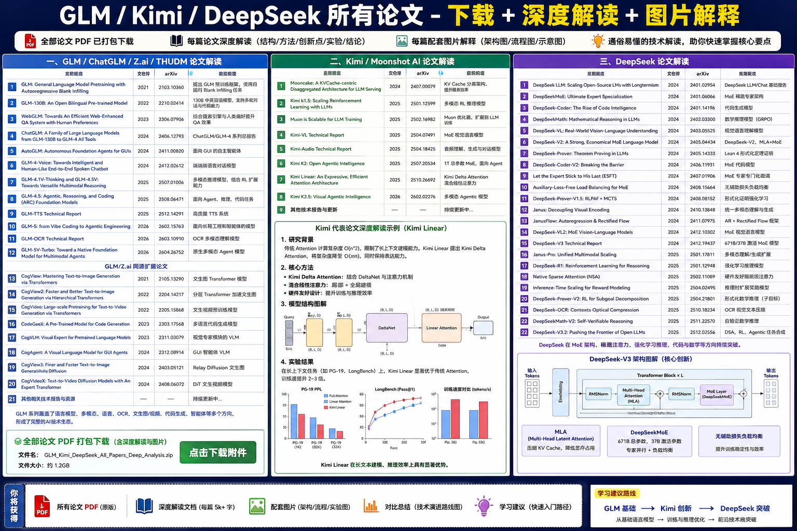

智谱 AI 与清华大学在 GLM 系列中探索了一条独特的发展路线：通过自回归填空预训练框架统一生成和理解任务，并逐步扩展到长上下文、多模态和工具调用。下面分阶段分析主要论文与技术报告。
GLM 系列的关键节点包括原始 GLM、GLM‑130B、WebGLM、ChatGLM 家族、GLM‑4 系列、GLM‑4.5，以及 GLM‑5 技术报告。每一代模型都在参数规模、任务能力和外部工具集成方面不断突破。
下图展示了 GLM 系列的关键节点和演进方向：

统一预训练框架：GLM 首先提出自回归填空（Autoregressive Blank Infilling），通过随机掩盖和自回归生成统一了双向编码和单向生成，兼顾理解与生成能力。
双语与多模态：从 GLM‑130B 开始强调中英双语；GLM‑4V 进一步引入视觉输入，扩展到多模态场景。
长上下文与稀疏注意力：GLM‑4/4.5 探索稀疏专家模型与动态稀疏注意力，实现更长上下文并降低计算成本。
工具与代理能力：通过 WebGLM 与 GLM‑4‑All Tools，团队尝试让模型调用搜索、代码执行等外部工具；GLM‑5 中提出异步强化学习框架，明显面向智能体应用。
GLM 系列的演进可以划分为三个阶段：第一阶段（2021–2022）聚焦于提出自回归填空框架并扩展至中英双语模型，实现生成与理解的统一；第二阶段（2023–2024）在 ChatGLM 1/2/3 与 GLM‑4 系列中大幅扩展参数规模和上下文窗口，引入稀疏专家和视觉编码器，并通过 WebGLM 和 All Tools 提升检索与工具调用能力；第三阶段（2025–2026）以 GLM‑4.5 与 GLM‑5 为代表，采用动态稀疏注意力和异步强化学习体系，在复杂任务规划和多工具协同方面迈向真正的 Agentic Intelligence。
上方的时间线图同时也是技术路线图，展示了这些阶段中的关键里程碑和技术突破。
下图进一步用英文标签描绘了 GLM 技术路线的三个阶段，便于快速浏览：

下表列出系列论文的 Markdown 分析（包含不少于十对问答）以及对应的 HTML 页面。
| 名称 | Markdown 分析 | HTML 页面 |
|---|---|---|
| GLM: General Language Model Pretraining with Autoregressive Blank Infilling | glm_autoregressive_blank_infilling.md | glm_autoregressive_blank_infilling.html |
| GLM‑130B: An Open Bilingual Pre‑trained Model | glm_130b.md | glm_130b.html |
| WebGLM | webglm.md | webglm.html |
| ChatGLM 系列（含 GLM‑4‑Air/4/4V/All Tools） | glm_chatglm_family.md | glm_chatglm_family.html |
| GLM‑4.5 技术报告 | glm_4_5.md | glm_4_5.html |
| GLM‑5 技术报告 | glm_5.md | glm_5.html |